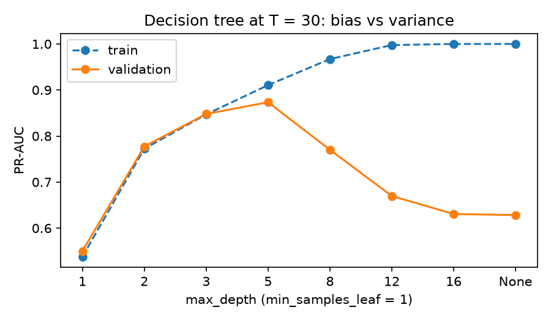
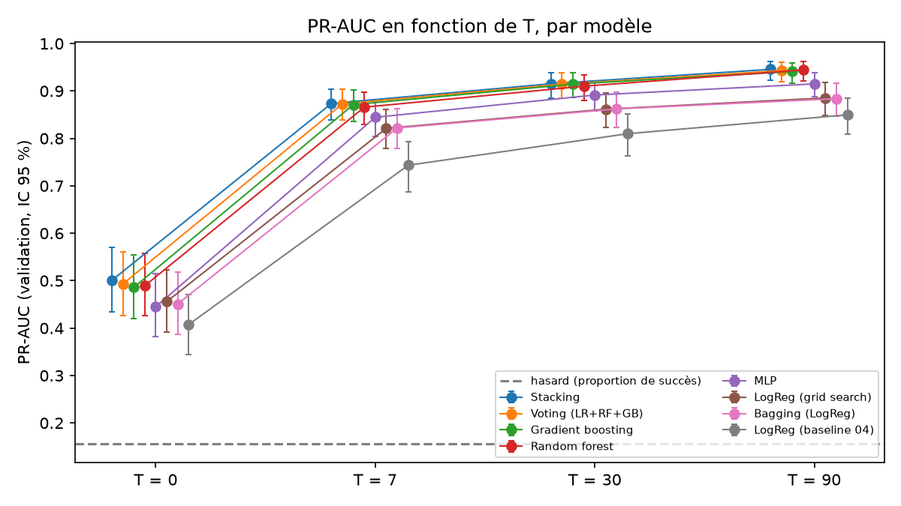
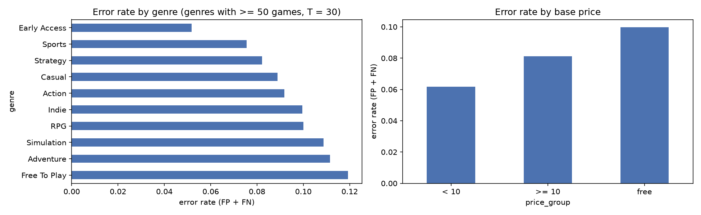

ESILV A4 – Machine Learning – November 2026 – Code: https://github.com/KZH-etu/SteamGameIA (notebooks 05, 06, 07)
Goal. We predict if a Steam game will be a success one year after its release (top 20% for the number of reviews in its first year and at least 80% positive reviews), at T = 0 (release) and T = 7, 30 and 90 days. Week 2 gave a clean dataset of 10,000 games, a time-based split (7,007 / 1,499 / 1,494 games) and a baseline: a logistic regression with a validation PR-AUC of 0.407, 0.743, 0.810 and 0.850 (random model: 0.157). This week we develop and compare other models. Owners: logistic regression tuning, SVM and ensembles (Lucas); decision tree, random forest and uncertainty (Arthur); gradient boosting and error analysis (Yohan); MLP and feature selection (Jason).
Every model is a scikit-learn Pipeline: median imputation and scaling of the numerical features,
one-hot encoding of release month and weekday, fitted on the training set only. One model per T.
| Model | Why we test it | Owner |
|---|---|---|
| Logistic regression (tuned) | the baseline itself: is it only badly regularised? | Lucas |
| Decision tree | non-linear and readable as rules; shows bias / variance with the depth | Arthur |
| Random forest | bagging of trees: reduces the variance of a single tree | Arthur |
Gradient boosting (HistGradientBoosting) | boosting of small trees: reduces the bias; strong on tabular data | Yohan |
| MLP (out-of-course model) | a neural network as a comparison point (1–2 hidden layers, early stopping) | Jason |
| SVM (RBF kernel) | lab 6: maximum margin with a curved boundary | Lucas |
| Bagging (logistic regression, tree, SVM) | lab 6: does averaging copies trained on samples help each model? | Lucas |
| Soft voting, stacking | lab 6: combine the best models (LR + RF + GB), and bagged SVM + bagged tree | Lucas |
PredefinedSplit: a random k-fold would mix past and future games.
refit=False, then the best configuration is refit on the training set only (with a predefined split,
refit=True would retrain on train + validation and the validation score would be lost).average_precision), because only 15.7% of the validation games are successes
(accuracy of “always failure”: 84%). ROC-AUC, F1, precision, recall, fit and predict times are also reported.Tuning. Full grid for the logistic regression, the tree and the SVM; random search (8 configurations per
model and per T, limited budget) for the random forest, gradient boosting, MLP; grid on
n_estimators and max_samples for bagging.
l2_regularization)
and of the MLP (alpha) was the largest value tested; both grids were widened up to 10. Changes:
−0.003 to +0.008, within noise; the gradient boosting now picks 10 at T = 30 and 90, again the edge.
Feature selection (lab 4, notebook 06). Each selector is placed inside the pipeline, between the
preprocessing and the baseline logistic regression (selecting on all the data first would leak the validation games
into the choice). At T = 30, every family beats the baseline with all 236 features (0.810): about 10 features are
enough to reach 0.84 and the L1 selection (SelectFromModel) keeps 33 features for 0.852. At T = 0, only
L1 (67 features, 0.466) and RFE (50–100 features, 0.43) beat the baseline (0.407), within its interval [0.34, 0.47]; the
mutual information filter never does. The baseline overfits its ≈ 230 sparse 0/1 features, which is also why the grid
search chose L1. Permutation importance of a gradient boosting (validation set): at T = 30, shuffling the
number of early reviews costs ≈ 0.71 of PR-AUC and their share of positive reviews ≈ 0.27, every other feature
< 0.01; at T = 0, the number of languages, Steam Cloud and the price matter most (drops of 0.03 to 0.06).
| Validation PR-AUC | T = 0 | T = 7 | T = 30 | T = 90 | Gain at T = 30 [95% CI] |
|---|---|---|---|---|---|
| Logistic regression (week 2 baseline) | 0.407 | 0.743 | 0.810 | 0.850 | – |
| Logistic regression (tuned) | 0.456 | 0.821 | 0.862 | 0.885 | +0.052 [0.032, 0.074] |
| Bagging of logistic regressions | 0.451 | 0.822 | 0.862 | 0.884 | +0.052 [0.033, 0.074] |
| SVM (RBF) | 0.428 | 0.810 | 0.846 | 0.873 | +0.035 [0.014, 0.059] |
| Bagging of SVMs | 0.351 | 0.700 | 0.769 | 0.855 | −0.041 [−0.080, −0.007] |
| Decision tree | 0.402 | 0.837 | 0.901 | 0.925 | +0.091 [0.057, 0.130] |
| Bagging of trees | 0.449 | 0.862 | 0.916 | 0.944 | +0.106 [0.074, 0.142] |
| Soft voting (bagged SVM + bagged tree) | 0.461 | 0.854 | 0.904 | 0.932 | +0.093 [0.065, 0.124] |
| MLP | 0.448 | 0.853 | 0.895 | 0.922 | +0.084 [0.060, 0.112] |
| Random forest | 0.489 | 0.866 | 0.910 | 0.944 | +0.100 [0.069, 0.138] |
| Gradient boosting | 0.483 | 0.875 | 0.917 | 0.946 | +0.107 [0.076, 0.142] |
| Soft voting (LR + RF + GB) | 0.495 | 0.872 | 0.914 | 0.945 | +0.104 [0.075, 0.139] |
| Stacking (LR + RF + GB) | 0.496 | 0.872 | 0.915 | 0.946 | +0.105 [0.077, 0.141] |
| 95% CI of the best model | [0.43, 0.56] | [0.84, 0.90] | [0.89, 0.94] | [0.92, 0.96] |

Gradient boosting at T = 30, validation set, threshold 0.5 (notebook 07, the model is not retrained): 208 true positives, 86 false alarms, 27 missed successes, 1,178 true negatives.

Limitations. One validation set of 1,499 games (≈ 235 successes): intervals are wide, and comparing 13 models on it makes the best score slightly optimistic (the test set will give the unbiased estimate). The bootstrap assumes independent games (same publishers, same months: the intervals are rather optimistic). The random search only tries 8 configurations, and one gradient boosting parameter is still on the edge of its grid. F1 uses the default 0.5 threshold, which must be chosen on validation. Part of the gain from T = 0 to 7 is mechanical (the first reviews also count in the target). Store data (tags, categories) describe the game today, not at release; the leaking columns found so far were removed (week 2).
Next steps (week 4). Choose the threshold on validation, evaluate the gradient boosting once on the test set with a bootstrap CI, fix the bagged SVM (SVMs with probabilities), final report and presentation.
Use of AI. We used an AI assistant for code and checked every answer. This week, three new errors were found
and documented in AI_AUDIT.md (bagging wrapped around the whole pipeline and nested parallelism; search
grids whose best value was on the edge; bagged SVM scored with votes); the critical prompts are in
PROMPT_LOG.md (entries 6 to 9).